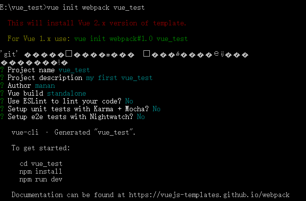
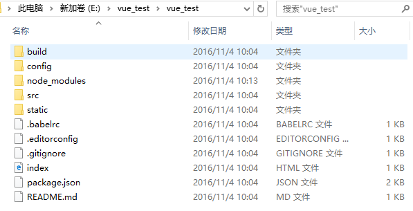
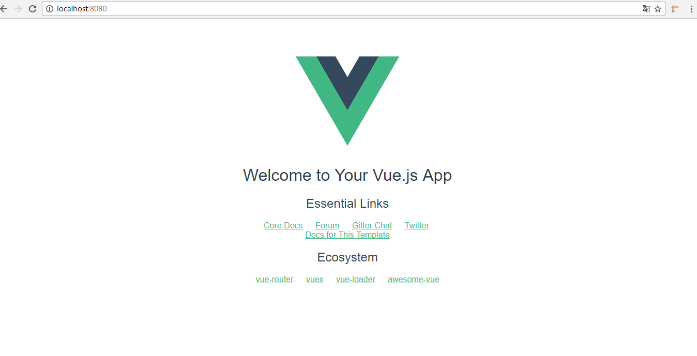
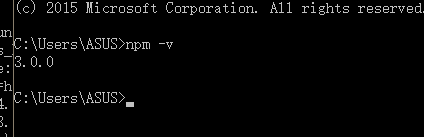
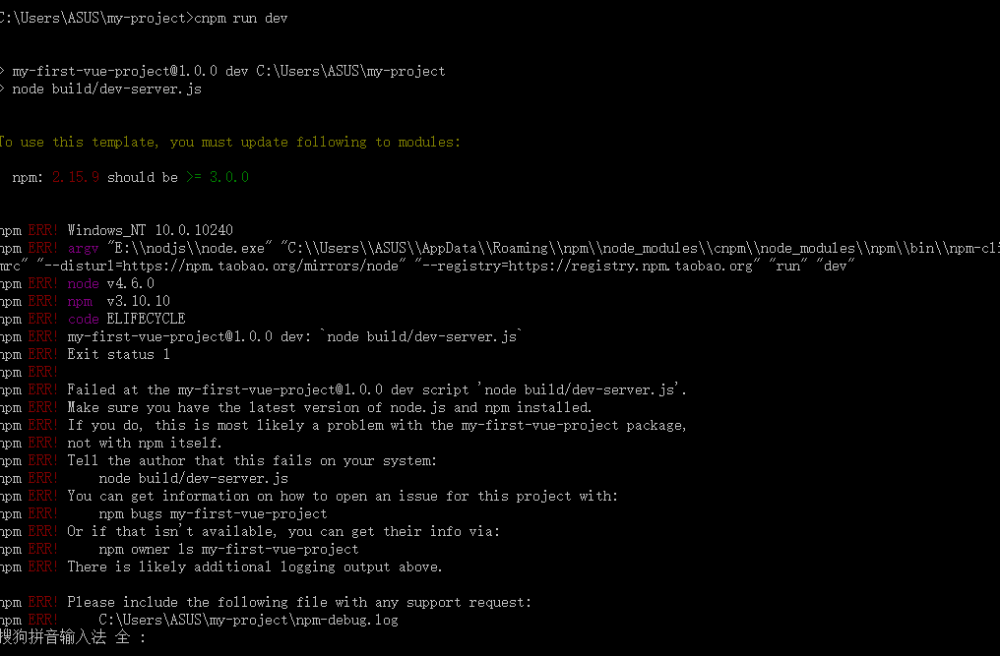
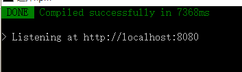

vue 安装教程（自己安装过程及遇到的一些坑）
1.安装node.js(http://www.runoob.com/nodejs/nodejs-install-setup.html)
2.基于node.js,利用淘宝npm镜像安装相关依赖
在cmd里直接输入：npm install -g cnpm –registry=https://registry.npm.taobao.org，回车，等待安装...
3.安装全局vue-cli脚手架,用于帮助搭建所需的模板框架
在cmd里 1)输入：cnpm install -g vue-cli，回车，等待安装...
2).输入：vue，回车，若出现vue信息说明表示成功
4.创建项目
在cmd里输入：vue init webpack vue_test(项目文件夹名)，回车，等待一小会儿，依次出现‘git’下的项，可按下图操作

5.安装依赖
在cmd里 1).输入：cd vue_test（项目名），回车，进入到具体项目文件夹
2).输入：npm install，回车，等待一小会儿
回到项目文件夹，会发现项目结构里，多了一个node_modules文件夹（该文件里的内容就是之前安装的依赖）
基于脚手架创建的默认项目结构如下图所示：

6.测试环境是否搭建成功
方法1：在cmd里输入：npm run dev
方法2：在浏览里输入：localhost:8080(默认端口为8080)
运行起来后的效果如下图所示：

问题：
在安装过程中，你可能会遇到这个问题.
当我们运行某个项目是 会提示

> my-first-vue-project@1.0.0 dev C:\Users\ASUS\my-project > node build/dev-server.js To use this template, you must update following to modules: npm: 2.15.9 should be >= 3.0.0
这是只有升级npm
即是 ：使用 npm -g install npm@3.0.0 （版本号2.9.1 可以根据已发布的版本随意升级或降级），获取最新版本的npm 文件
查看版本：

这时在项目中进行 npm run dev 时还是会 提示

因此还有一部关键的一步：
复制C:\Users\{你的Windows用户名}\AppData\Roaming\npm\node_modules\npm下的文件到你的 NodeJS安装目录下的 \node_modules\npm 中，覆盖掉原有的全部文件
最后运行 npm run dev 成功运行
